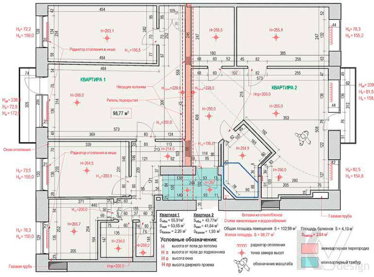

Обмерный план с привязкой инженерных коммуникаций

Перший крок будь-якого дизайн-проекту - створення обмірного плану, на якому з точністю до п'яти сантиметрів вказуються довжина, ширина і висота кожного приміщення, що несуть і не несуть стіни, розміри віконних і дверних прорізів. Обов'язково зазначається наявність і розташування інженерних комунікацій: вентиляційних шахт, стояків водопостачання та каналізації, електричних щитків, пожежних датчиків, стояків і щитів опалення.
В процесі виконання замірів проводиться фото- або відео-фіксація об'єкта; при необхідності робиться прив'язка до сторін світу. Створення обмірних плану вимагає особливої ретельності, тому в середньому на обмір квартири площею 100 кв. м в новобудові йде близько години. Для вторинної нерухомості буде потрібно вже від двох годин і більше, так як тут робота може ускладнюватися через наявність меблів, наявних оздоблювальних матеріалів, підвіконь, дверних коробок і т.п.